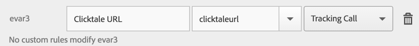

Adobe Analytics
When using both Clicktale for Apps and Adobe Analytics, you can now integrate the platforms and be able to see as part of the tracked context in Adobe Mobile Services / Adobe Analytics, the Clicktale session link that correspond to that context. As Clicktale enables you to see the replay of your users actual experiences, enabling this integration will help you understand for each context, what really happened.
Two Options for how to integrate
You can send data between Adobe Analytics and Clicktale so analysts can continue their analysis starting from either solution and switching to the other one. When enabling the integration you can choose from two options.
Depending on how your analysts work, you can choose to implement just one of these options or both.
Send the Clicktale session replay link into Adobe
To activate the integration, you will be using Adobe Analytics action tracking and add the Clicktale session link into the context.
After tracking the action, you will need to access Adobe Mobile Services and map the action you tracked to an evar, in order to later be able to add it to the different reports inside Adobe Analytics (Omniture).
Lastly, Clicktale offers a Chrome Extension that will extend Adobe Analytics report results, making the session links pointing to Clicktale, inside Adobe, click-able so it is simple to move between the systems.
Send the Adobe ID into Clicktale
You can also integrate in the opposite direction by sending the Adobe ID or Visitor ID into Clicktale as an event or as the User ID attribute for storing with the Clicktale recording. Having this within Clicktale will enable analysts to go from Clicktale session replays to retrieving the same session from within Adobe. Both of these methods are explained further below.
Using your existing Adobe Actions and States
It is possible and recommended to have all the Adobe actions and states sent also to Clicktale so you can filter directly in Clicktale using the same data you already know. This kind of implementation will not create any extra charges in Clicktale and is fairly simple to perform.
For every Adobe trackAction, you can call Clicktale's trackEvent, which would accept only a key and value pair - unlike the context which is available in Adobe.
For Example, in iOS:
// existing [ADBMobile trackAction:@"myapp.Search" data:[@"value" : searchString]]; // add a Clicktale track [[Clicktale sharedInstance] trackEvent:@"Search" value:searchString];For every Adobe trackState, you can call Clicktale's trackPageView, which would accept the page view name (or state name).
For Example, in iOS:
// existing [ADBMobile trackState:@"Login Page" data:contextData]; // add a Clicktale track [[Clicktale sharedInstance] trackPageView:@"Login Page"];
This will enable you to easily navigate with data you are already familiar with.
Step by step: Tracking the Clicktale Session ID within Adobe
In order to track the new Action in Adobe and later map it to an eVar.
iOS
Begin by adding the following ADB track code:
[ADBMobile trackAction:nil data:[@"ClicktaleURL" : sessionLink]];
You can obtain sessionLink from the delegate -(void)clicktaleDidSessionURLCreated:(NSString *)sessionLink which will be called once the session begins recording. More information on the delegates can be found at the About Data Integrations page.
Another option would be calling [[Clicktale sharedInstance] getSessionLink] which will be available after a recording has begun, you should use that if you are deciding to track the action while the session is running, by your specific logic and not rather as it becomes available (i.e. begins recording)
Android
Begin by adding the following Analytics tracking code:
HashMap<String, Object> clicktaleContextData = new HashMap<String, Object>();
clicktaleContextData.put("ClicktaleURL", sessionLink);
Analytics.trackAction(null, clicktaleContextData);
You can obtain sessionLink from the callback public void onSessionURLCreated(String sessionLink) which will be called once the session begins recording. More information on the callbacks can be found at the About Data Integrations or Android Getting Started page.
Mapping the context into an evar
Once the session link is tracked, you should map it to an evar so it becomes available to you inside Adobe Analytics. This mapping is done from the Adobe Mobile Services dashboard.

Of course, the evar number will vary based on your requirement / current setup you have in Adobe Analytics today.
At this point, you can now use the new evar inside Adobe Analytics.
Installing the Clicktale Chrome browser extension
In order to make it easy to click links to Clicktale session replays from within the Adobe Analytics UI, you can install the Clicktale Chrome Extension. This will enable you to have a direct playback button from within Adobe to Clicktale.
After installing, enter 'apps' to the token.
Note that you need to install version 1.7.0 and up of the extension (in case you already have an older version, please update)
Step by Step: Tracking the Adobe ID / Visitor ID within Clicktale
Inside Clicktale for Apps dashboard, you may want to be able to see the Adobe ID (aid) or Visitor ID (vid), Clicktale offers several ways to let you track this information in a way that is search-able later.
This will enable you to both:
- See the Adobe/Visitor ID so you can later search for them inside Adobe
- From Adobe, copy the ID and then look for recordings of this user inside Clicktale.
To have this functionality available for you, you need to add a tracking call inside your app and either track a new event inside Clicktale with the Adobe ID or use the User ID tracking abilities that Clicktale offers.
The below Android and iOS snippets will enable you to either search the aid/vis via the Clicktale UserID or via an event name Adobe ID or Adobe Visitor ID
Adobe ID and Visitor ID
In the Adobe Mobile SDK for either iOS or Android, Adobe exposes the ID in the following ways:
[ADBMobile trackingIdentifier]orAnalytics.getTrackingIdentifier():This is an app-specific unique visitor id that is generated by Adobe’s servers upon first launch. This ID is preserved between app upgrades, is saved and restored during the standard application backup process, and is removed on uninstall.
[ADBMobile userIdentifier]orConfig.getUserIdentifier():Returns the custom user identifier if a custom identifier has been set. Returns nil/null if a custom identifier is not set.
iOS
For iOS, to track the IDs use the trackEvent Clicktale API or setSessionUserID
// tracking the aid/vid to UserID in Clicktale
// tracking the aid
[[Clicktale sharedInstance] setSessionUserID:[ADBMobile trackingIdentifier]];
// tracking the vid
[[Clicktale sharedInstance] setSessionUserID:[ADBMobile userIdentifier]];
// tracking the aid/vid as an Event in Clicktale
[[Clicktale sharedInstance] trackEvent:@"Adobe ID" value:[ADBMobile trackingIdentifier]];
[[Clicktale sharedInstance] trackEvent:@"Adobe Visitor ID" value:[ADBMobile userIdentifier]];
You can use both, but just one of the methods above is enough to be able to later find data easily.
When using setSessionUserID, only call it once as the second call will override the data, in the above example we show how to track the aid and vid, but using setSessionUserID you should only track one of them. You can track them both using an event.
Android
For Android, to track the IDs use the logEvent Clicktale API or setUsedId
// tracking the aid/vis to UserID in Clicktale
// tracking the aid
Clicktale.setUsedId(Analytics.getTrackingIdentifier());
// tracking the vid
Clicktale.setUsedId(Config.getUserIdentifier());
// tracking the aid/vid as an Event in Clicktale
Clicktale.logEvent("Adobe ID", Analytics.getTrackingIdentifier());
Clicktale.logEvent("Adobe Visitor ID", Config.getUserIdentifier());
You can use both, but just one of the methods above is enough to be able to later find data easily.
When using setUsedId, only call it once as the second call will override the data. In the above example we show how to track the aid and vid, but using setUsedId you should only track one of them. You can track them both using an event.